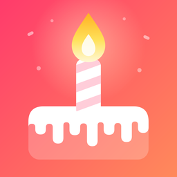
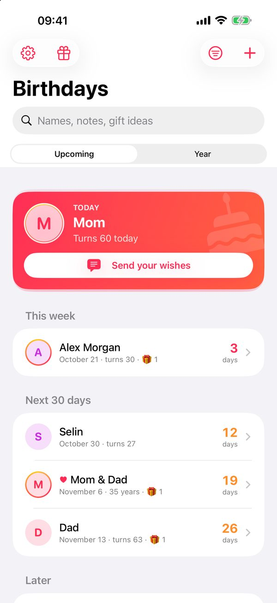
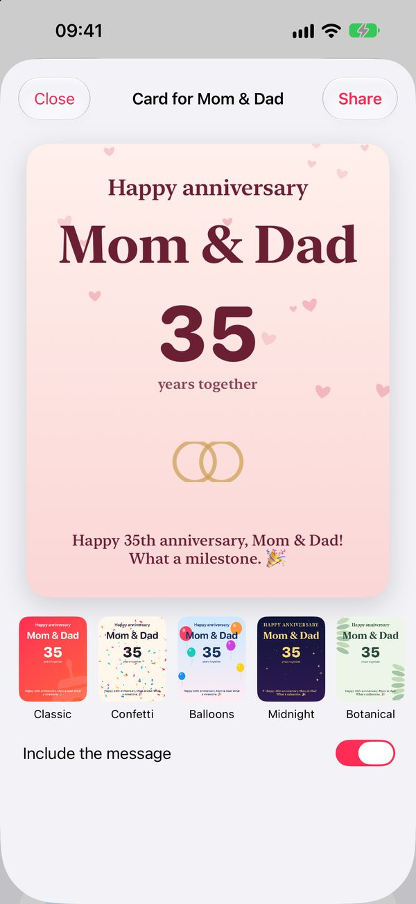
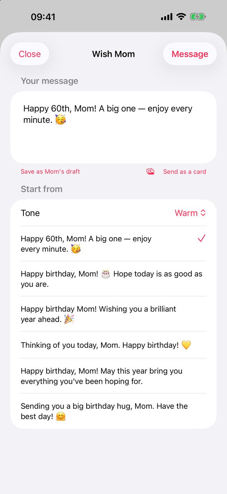

Never miss a birthday — and keep it to yourself.
Every birthday and anniversary that matters, on your Home Screen and Lock Screen, with the right words and a card ready when the day comes.
Free on iPhone. One optional purchase, never a subscription.



How it works
- Pick your people. Choose them from Contacts with Apple's picker — the app only ever sees the people you tap — or add them by hand: a birthday, an anniversary, or a quiet remembrance day for someone you've lost.
- Get reminded. A reminder on the morning of the day that repeats every year on its own (with a very long list, Birthdays asks you to open it now and then). With the unlock, heads-ups 1, 3, 7 or 14 days before and a Monday summary of the week.
- Say it well. Dozens of hand-written wishes in five tones open in Messages with their number, and seven card designs are drawn on your iPhone with their name and age.
- Plan the gift. Note ideas as they come, add a price, mark what you've bought — and next year you'll know what you gave.
Widgets for every screen
Small, medium and large widgets show who's next and how many days are left; on the Lock Screen, a ring, a card or one line above the clock. On the day, mark your wish as sent right from the widget.
Private by design
- No account and no sign-in.
- No ads, no analytics, no tracking. The developer collects no data.
- Contacts and photos come only through Apple's pickers; the app never reads your address book or photo library.
- Back up everything to one file you keep, and export to Calendar or a spreadsheet.
Questions
- Is it free?
- Up to five people with a reminder on the day, every list widget, ages and the almanac, warm and short wishes, the Classic card, search, backup and export are free. One purchase adds everyone you care about, heads-up reminders and your own reminder time, the gift planner, every wish tone and card design, circles, themes and the One Birthday widget.
- Will reminders arrive if I never open the app?
- Yes — they repeat every year on their own. iOS keeps up to 64 per app; with a very long list, Birthdays queues the nearest ones first and asks you to open it before anyone further out is missed.
- Which languages?
- English, German, French, Spanish, Italian, Portuguese (Brazil), Japanese and Turkish.